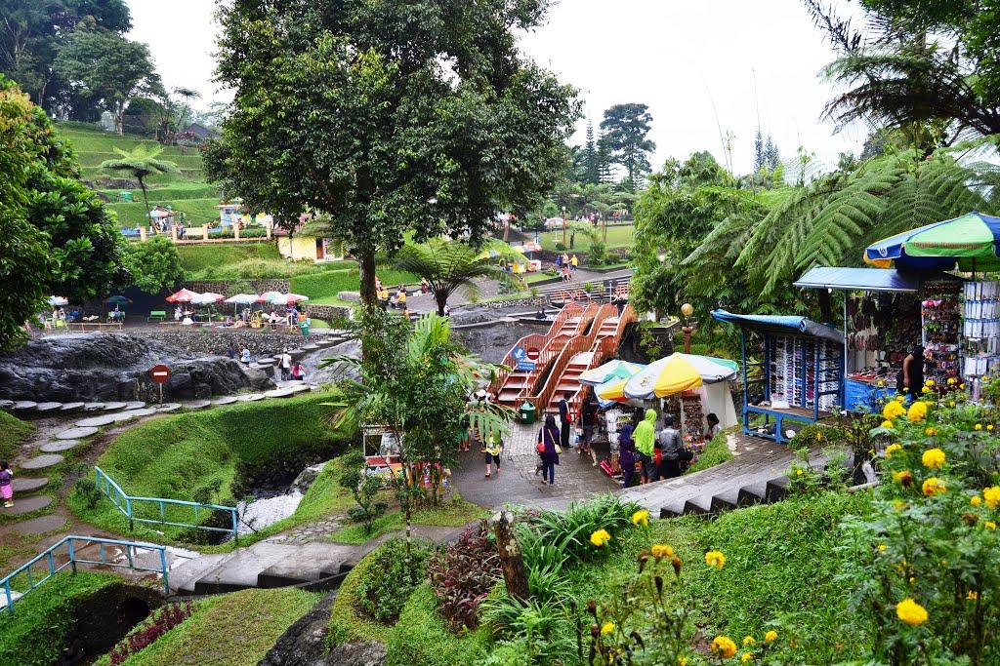
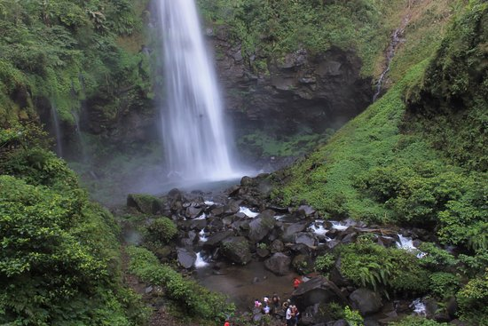

Daftar Isi
Pesona Alam Banyumas
Banyumas merupakan salah satu kabupaten di Jawa tegah yang memiliki potensi pariwisata alam dan budaya yang beraneka ragam. Letaknya yang berada di kaki gunung Slamet membuat Banyumas memiliki kekayaan alam yang berlimpah dan terkenal dengan sebutan kabupaten seribu curug lantaran banyaknya jumlah air terjun di wilayah tersebut.
Pesona alam yang ada di Banyumas memiliki daya tarik tersendiri yang mampu menarik wisatawan untuk mengunjungi daerah tersebut.
- Baturraden 
- Small World
- Curug Cipendok 
- Curug Jenggala
- Curug Telu
- Bukit Watu Meja
- Museum Jenderal Soedirman
- Museum Wayang
- Bukit Tranggulasih
- Gunung Slamet
{kind=link}
Baturaden menyajikan pemandangan pesona alam yang begitu indah dan memanjakan mata. Pada cuaca yang cerah, siapapun yang berkunjung ke Baturaden bisa melihat pantai Cilacap dan Nusa Kambangan dari atas Baturaden. Di Lokawisata Baturraden terdapat kolam renang, taman bermain, lembah sunyi, pemandangan gunung yang indah, sepeda air, hingga teater alam Baturraden.
{kind=link}
Small World merupakan salah satu destinasi wisata yang ada di Banyumas yang menyajikan miniatur-miniatur objek-objek terkenal yang ada di dunia, seperti patung Liberty, Colloseum, menara Eiffel, dan masih banyak lagi.
{kind=link}
Curug Cipendok merupakan salah satu destinasi wisata di Banyumas yang cukup terkenal. Air terjun setinggi 92 meter yang terletak di lereng Gunung Slamet ini memiliki daya tarik tersendiri, karena lingkungannya yang masih alami. Curug Cipendok terletak di Desa Karangtengah, Kecamatan Cilongok, Kabupaten Banyumas Daya tarik dari Curug Cipendok adalah telaga dengan air yang cukup jernih dan di sekitarnya yang dikelilingi hutan yang masih alami. Selain itu, wisatawan juga dapat mendengar suara-suara burung langka seperti elang Jawa yang terbang berputar-putar di atas telaga. Apalagi, bagi pengunjung yang beruntung dapat melihat spesies endemik sejenis monyet berwarna abu-abu yakni rek-rek. Hal inilah yang membuat Curug Cipendok wajib masuk dalam daftar destinasi wisata yang hendak Anda kunjungi.
{kind=link}
Selain curug Cipendok, ada juga curug Jenggala. Air terjun ini memiliki telah didesain sedemikian rupa oleh pemerintah setempat untuk mengundang para wisatawan dari kalangan anak muda. Pasalnya, di sana terdapat beberapa deck view yang didesain kekinian dan ada juga yang bernuansa romantis. Tentunya hal ini menjadi nilai lebih tersendiri bagi para fotografer yang ingin mencari spot foto yang tepat. Adapun lokasi air terjun setinggi 30 meter ini berada di Dusun Kalipagu, Ketenger, Baturraden, Ketenger, Kabupaten Banyumas, Jawa Tengah.
{kind=link}
Karena letaknya yang berada di kaki gunung Slamet, maka tak heran kalau ada banyak air terjun di daerah Banyumas, salah satunya Curug Telu atau Air Terjun Tiga. Sesuai namanya, curug ini memiliki tiga air terjun utama. Tinggi Curug Telu hanya sekitar 10 meter dan terletak di Desa Karangsalam, Kecamatan Baturraden, Purwokerto, Jawa Tengah.
{kind=link}
Bukit Watu Meja merupakan bukit yang ditumbuhi hutan pinus dan terletak di dekat sungai Serayu, tepatnya di desa Tumiyang, Kebasen, Banyumas. Bukit yang menghadirkan panorama alam menakjubkan di puncaknya ini dinamakan demikian lantaran adanya bebatuan yang berbentuk meja di area tersebut. Batu yang dalam bahasa Jawa disebut Watu menjadi asal muasal dari nama Bukit Watu Meja. Bukit Watu Meja menyuguhkan pemandangan alam yang memanjakan mata di atas puncaknya. Panorama Gunung Slamet yang dikelilingi hamparan sawah dan hutan serta kelokan Sungai Serayu membuat pengunjungnya bagaikan sedang melihat surga di dunia.
{kind=link}
Tidak hanya menghadirkan destinasi wisata alam saja, Banyumas juga memiliki destinasi wisata yang menyuguhkan nuansa sejarah yang sangat kental lewat Museum Jenderal Sudirman. Museum ini menceritakan secara eksklusif tentang sosok dari Panglima Besar TNI Jenderal Sudirman yang berjasa dalam memperjuangkan kemerdekaan Indonesia. Lewat museum ini, pengunjung diajak untuk lebih eling sejarah. Museum ini terletak di Jl. Patimura, Karanglewas Lor, Purwokerto Barat, Karanglewas Lor, Banyumas, Kabupaten Banyumas.
{kind=link}
Museum Wayang didirikan pada tahun 1983 atas gagasan Soeparjo Rustam bersama sesepuh atau tokoh-tokoh Banyumas seperti Soerono, Soesilo Sudarman dan lain-lain tokoh budayawan Banyumas. Tujuan pendirian Museum Wayang ini adalah untuk melestarikan budaya Banyumas Khususnya dan budaya bangsa pada umumnya, terutama seni pewayangan. Dalam museum ini, ada banyak jenis wayang yang bisa dilihat dan dipelajari. Hal ini tentunya bisa menambah wawasan pengetahuan tentang wayang yang merupakan warisan budaya asli Indonesia yang diakui dunia. Museum ini berlokasi di Jalan Budi Utomo No.1, Sudagaran, Banyumas, Sudagaran, Kec. Banyumas, Kabupaten Banyumas.

Terletak di Desa Windujaya kecamatan Kedungbanteng Banyumas, tepatnya di RT 03 RW 05, sekitar 15km dari pusat kota. Bukit ini banyak menyita perhatian wisatawan dalam maupun luar kota. Dapat ditempuh dari dua jalur, bisa dari desa Kedungbanteng ke utara lewat gerbang masuk Curug Gomblang, atau bisa juga dari kawasan wisata Curug Bayan (Curug Gede) Baturaden. Hanya dengan membayar tiket masuk parkir senilai Rp. 3000,- saja kita sudah bisa berekreasi sepuasnya ditempat ini.
Dari bukit ini Anda bisa melihat kota Purwokerto dari ketinggian, tidak hanya Purwokerto, bahkan Purbalingga dan Pemalang pun terlihat dari atas bukit ini. Sungguh, pemandangan yang sangat menakjubkan.
Untuk Anda yang mempunyai hobi camping, lokasi ini sangat cocok sekali untuk menjadi destinasi. Tempatnya pun tidak terlalu jauh dari pemukiman warga. Bahkan didalam kawasan ini banyak sekali penjual minuman, gorengan, makanan ringan, mi instan, kopi, dan lain sebagainya. Sangat memudahkan Anda jika memerlukan kebutuhan untuk camping atau bermalam di bukit Tranggulasih ini.
Disini Anda bisa menikmati Sunrise dan Sunset dengan pemandangan yang sangat indah. Selain itu pepohonan yang rindang dan udara yang segar sangat cocok untuk berekreasi dan menenangkan diri dari penat. Tempat yang sangat cocok untuk berekreasi akhir pekan untuk semua kalangan. Tidak hanya anak muda, bapak-bapak serta ibu-ibu bahkan anak-anak juga sangat antusias melihat Purwokerto dari atas bukit ini. Seakan tidak mau melewatkan moment begitu saja, para pengunjung pun mengabadikan moment tersebut dengan kamera-nya.
{kind=link}
Gunung Slamet dengan ketinggian 3.428 Mdpl merupakan gunung tertinggi di Jawa Tengah dan menempati urutan ke-2 gunung tertinggi di Jawa setalah Gunung Semeru yang memiliki ketinggian mencapai 3.676 Mdpl. Posisi Gunung Slamet berada di antara 5 kabupaten di Provinisi Jawa tengah, yaitu Kabupaten Brebes, Banyumas, Purbalingga, Tegal dan Pemalang. Gunung Slamet termasuk gunung berapi yang masih aktif dengan jalur pendakian yang cukup sulit. Namun demikian, Gunung Slamet termasuk salah satu destinasi pendakian yang cukup populer di kalangan para pendaki.
Nama Gunung Slamet identik dengan kata Slamet yang dalam bahasa Jawa bermakna selamat. Pada intinya Gunung Slamet bisa memberikan makna keselamatan. Hal ini dikarenakan aktifitas Gunung Slamet yang terbilang aktif namun tidak pernah meletus dalam skala yang besar. Namun begitu, dalam sebuah ramalan yang tertulis dalam buku Sri Aji Jogoboyo dari abad ke-12 disebutkan bahwa jika Gunung Slamet meletus maka hal itu akan menyebabkan Pulau Jawa terbelah dua akibat amblesnya permukaan tanah yang membujur dari wilayah laut utara hingga laut selatan.
Banyak yang menyebutkan bahwa jalur pendakian menuju ke puncak Gunung Slamet cukup sulit. Selain medan yang cenderung terjal, kemunculan kabut yang cukup tebal menjadi kendala tersendiri yang menghambat aktifitas pendakian. Berikut ini adalah beberapa jalur pendakian yang bisa digunakan untuk mencapai ke puncak Gunung Slamet: Jalur Bambangan, Jalur Baturaden, Jalur Gambuhan, Jalur Jurangmangu, Jalur Gunungsari, Jalur Dhipajaya, dan Jalur Guci. Meskipun ada banyak jalur alternatif yang bisa digunakan untuk mencapai puncak Gunung Slamet, namun yang paling populer adalah jalur Bambangan.
{kind=link}